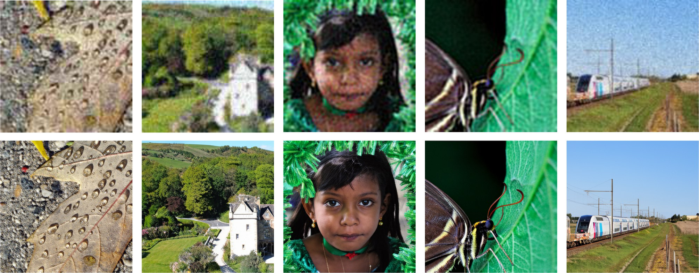
Abstract
Real-world Image Restoration (Real-IR) aims to recover high-quality (HQ) images from complex and unknown degradations. Recent diffusion-based methods have substantially improved perceptual quality, yet two obstacles remain: methods that sample from Gaussian noise require many steps and are often less faithful to the degraded input, whereas residual-based methods that start from the low-quality (LQ) image typically train task-specific models from scratch, with optimization objectives coupled to a particular noise scheduler, and therefore cannot reuse modern pre-trained generative priors.
We present ScaleResfusion, which rewrites residual restoration as a scheduler-independent adaptation interface for pre-trained text-to-image rectified-flow models. Its core, Residual Rectified Flow (RRF), inserts the residual term R into the linear transport path of Rectified Flow, so that sampling starts from noisy LQ at an exact acceleration point, where the signal-to-noise ratio of the starting state is continuously controlled by the residual ratio γ. The resulting optimization target, the residual vector field, contains no scheduler-specific coefficients and differs from the pre-trained rectified-flow target only by the residual offset γR; adapting a frozen billion-scale backbone therefore reduces to fitting this compact residual correction with LoRA-only training. A knowledge-distillation pipeline built around RRF further reduces sampling to as few as 4 steps. Experiments on real-world super-resolution across multiple benchmarks show that ScaleResfusion achieves state-of-the-art restoration quality and transfers consistently across pre-trained rectified-flow backbones from 2B to 9B parameters.
Method
Residual Rectified Flow
Given an LQ–HQ pair, we define the residual R = x̂0 − x0. RRF inserts the weighted residual into the linear path of Rectified Flow while keeping the transport straight:
Substituting R shows that the coefficient of the unknown HQ image vanishes at t* = 1/(1+γ): the state there depends only on the LQ image and Gaussian noise, so inference starts from xt* = γ/(1+γ) x̂0 + 1/(1+γ) ε and integrates the learned residual vector field back to t = 0 over a shortened interval. Because resv = vRF + γR carries no scheduler-specific coefficients, adapting a pre-trained rectified-flow model only requires fitting the compact residual correction, which we realise with LoRA alone.
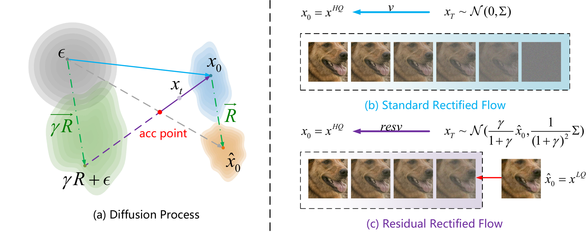
Why start from the residual?
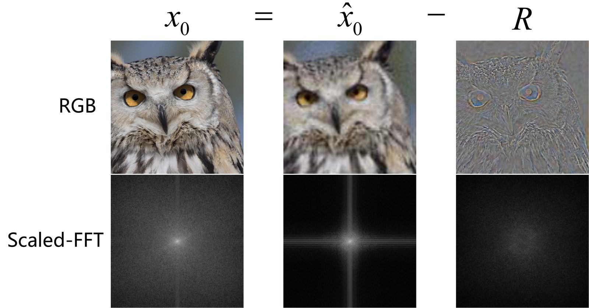
The reverse ODE is initialization-sensitive: a start closer to the restoration manifold is transported to a terminal state closer to the HQ distribution. Gaussian initialization is task-agnostic and far from the observed content; deterministic one-step LQ→HQ mappings lose the sampling capability of diffusion models; noisy-LQ DDPM sampling is biased toward the degradation without an explicit correction direction.
ScaleResfusion instead starts from a noisy LQ state and follows a residual-oriented transport, giving a closer initialization and more coherent convergence toward the target distribution.
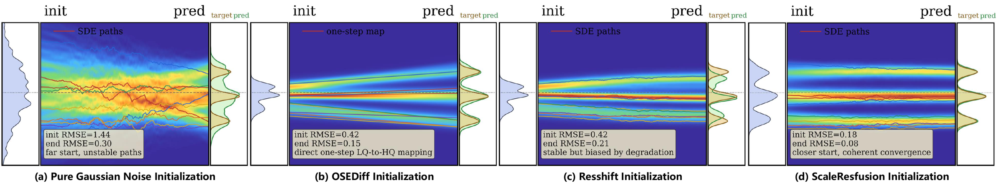
Knowledge-distilled parameter-efficient training
The restored-image generator predicts the residual vector field under RRF. LQ features are injected as conditioning (a ReferenceNet-style feature extractor for SD3 / Z-Image, token concatenation for FLUX.2), and DAPE provides textual constraints. A DMD loss and an optional GAN loss regularise the restored distribution toward natural HQ images. Generation and regularization branches share the same frozen backbone weights; only LoRA adapters are trained.
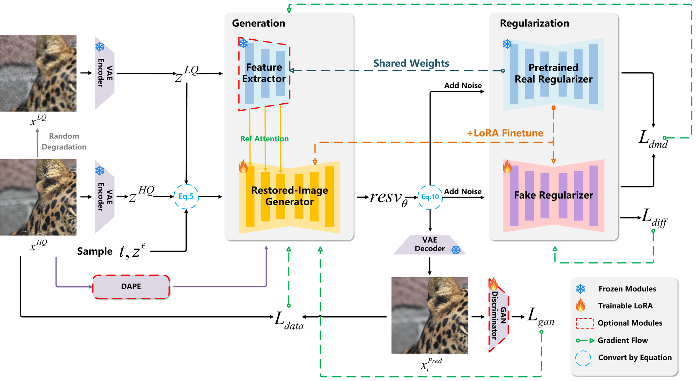
Results
Quantitative comparison with the default FLUX.2-klein-4B backbone and 4 sampling steps. Red = best, blue = second best. The first group lists GAN-based methods, the second group diffusion-based methods.
| Method | PSNR ↑ | SSIM ↑ | LPIPS ↓ | DISTS ↓ | FID ↓ | NIQE ↓ | MUSIQ ↑ | MANIQA ↑ |
|---|---|---|---|---|---|---|---|---|
| BSRGAN | 28.70 | 0.80 | 0.29 | 0.21 | 155.61 | 6.54 | 57.15 | 0.48 |
| Real-ESRGAN | 28.61 | 0.81 | 0.28 | 0.21 | 147.66 | 6.70 | 54.27 | 0.49 |
| LDL | 28.20 | 0.81 | 0.28 | 0.21 | 155.51 | 7.14 | 53.94 | 0.49 |
| FeMaSR | 26.87 | 0.76 | 0.32 | 0.22 | 157.72 | 5.91 | 53.70 | 0.44 |
| StableSR | 28.04 | 0.75 | 0.33 | 0.23 | 144.15 | 6.60 | 58.53 | 0.56 |
| SUPIR | 25.09 | 0.65 | 0.42 | 0.28 | 169.48 | 7.39 | 58.79 | 0.55 |
| TSD-SR | 27.77 | 0.76 | 0.30 | 0.21 | 134.98 | 5.91 | 66.62 | 0.59 |
| AddSR | 26.68 | 0.74 | 0.37 | 0.26 | 164.82 | 7.80 | 65.36 | 0.60 |
| CCSR | 28.24 | 0.78 | 0.32 | 0.23 | 157.30 | 6.81 | 66.28 | 0.61 |
| DiffBIR | 25.90 | 0.62 | 0.47 | 0.29 | 180.33 | 6.33 | 66.13 | 0.62 |
| OSEDiff | 27.92 | 0.78 | 0.30 | 0.22 | 135.41 | 6.46 | 64.69 | 0.59 |
| PASD | 28.02 | 0.78 | 0.32 | 0.23 | 174.76 | 6.72 | 57.23 | 0.51 |
| ResShift | 27.05 | 0.74 | 0.39 | 0.26 | 159.90 | 8.65 | 51.24 | 0.47 |
| SeeSR | 28.07 | 0.77 | 0.32 | 0.23 | 147.37 | 6.41 | 65.09 | 0.61 |
| FluxSR | 20.88 | 0.61 | 0.39 | 0.25 | 144.66 | 7.11 | 66.38 | 0.57 |
| Ours (w/o GAN) | 29.77 | 0.82 | 0.25 | 0.20 | 118.18 | 6.95 | 62.42 | 0.61 |
| Ours (w/ GAN) | 28.26 | 0.78 | 0.29 | 0.21 | 124.03 | 6.21 | 65.16 | 0.64 |
| Method | PSNR ↑ | SSIM ↑ | LPIPS ↓ | DISTS ↓ | FID ↓ | NIQE ↓ | MUSIQ ↑ | MANIQA ↑ |
|---|---|---|---|---|---|---|---|---|
| BSRGAN | 26.38 | 0.77 | 0.27 | 0.21 | 141.24 | 5.64 | 63.28 | 0.54 |
| Real-ESRGAN | 26.65 | 0.76 | 0.27 | 0.21 | 136.29 | 5.85 | 60.45 | 0.55 |
| LDL | 25.28 | 0.76 | 0.28 | 0.21 | 142.74 | 5.99 | 60.92 | 0.55 |
| FeMaSR | 25.06 | 0.74 | 0.29 | 0.23 | 141.01 | 5.77 | 59.05 | 0.49 |
| StableSR | 24.62 | 0.70 | 0.31 | 0.22 | 128.54 | 5.78 | 65.48 | 0.62 |
| SUPIR | 23.65 | 0.66 | 0.35 | 0.25 | 130.38 | 6.11 | 62.09 | 0.58 |
| TSD-SR | 24.81 | 0.72 | 0.27 | 0.21 | 114.45 | 5.13 | 71.19 | 0.63 |
| AddSR | 22.65 | 0.65 | 0.38 | 0.27 | 154.18 | 6.62 | 71.41 | 0.67 |
| CCSR | 25.92 | 0.75 | 0.28 | 0.21 | 122.84 | 5.73 | 69.18 | 0.64 |
| DiffBIR | 24.83 | 0.65 | 0.36 | 0.24 | 130.75 | 5.84 | 69.28 | 0.65 |
| OSEDiff | 25.15 | 0.73 | 0.29 | 0.21 | 123.53 | 5.65 | 69.08 | 0.63 |
| PASD | 26.04 | 0.74 | 0.28 | 0.21 | 135.48 | 5.71 | 60.03 | 0.56 |
| ResShift | 25.66 | 0.74 | 0.33 | 0.25 | 128.03 | 8.07 | 56.89 | 0.51 |
| SeeSR | 25.15 | 0.72 | 0.30 | 0.22 | 125.30 | 5.40 | 69.81 | 0.65 |
| FluxSR | 23.83 | 0.69 | 0.32 | 0.23 | 120.63 | 6.57 | 70.07 | 0.61 |
| Ours (w/o GAN) | 27.05 | 0.78 | 0.24 | 0.20 | 104.74 | 6.21 | 67.25 | 0.64 |
| Ours (w/ GAN) | 25.78 | 0.75 | 0.26 | 0.20 | 106.22 | 5.29 | 69.86 | 0.68 |
| Method | PSNR ↑ | SSIM ↑ | LPIPS ↓ | DISTS ↓ | FID ↓ | NIQE ↓ | MUSIQ ↑ | MANIQA ↑ |
|---|---|---|---|---|---|---|---|---|
| BSRGAN | 24.58 | 0.63 | 0.35 | 0.23 | 49.55 | 4.75 | 61.68 | 0.50 |
| Real-ESRGAN | 24.02 | 0.64 | 0.32 | 0.21 | 38.87 | 4.83 | 60.38 | 0.54 |
| LDL | 23.83 | 0.63 | 0.33 | 0.22 | 42.28 | 4.86 | 60.04 | 0.53 |
| FeMaSR | 22.45 | 0.59 | 0.34 | 0.22 | 41.97 | 4.87 | 57.94 | 0.48 |
| StableSR | 23.27 | 0.57 | 0.31 | 0.20 | 24.95 | 4.77 | 65.78 | 0.62 |
| SUPIR | 22.13 | 0.53 | 0.39 | 0.23 | 31.40 | 5.68 | 63.86 | 0.59 |
| TSD-SR | 23.02 | 0.58 | 0.27 | 0.18 | 29.16 | 4.32 | 71.69 | 0.62 |
| AddSR | 22.37 | 0.56 | 0.38 | 0.23 | 34.91 | 5.84 | 69.15 | 0.63 |
| CCSR | 24.30 | 0.63 | 0.30 | 0.20 | 30.84 | 5.34 | 69.53 | 0.61 |
| DiffBIR | 23.14 | 0.54 | 0.37 | 0.22 | 32.71 | 4.99 | 69.87 | 0.64 |
| OSEDiff | 23.72 | 0.61 | 0.29 | 0.20 | 26.34 | 4.71 | 67.96 | 0.61 |
| PASD | 24.01 | 0.61 | 0.38 | 0.22 | 37.06 | 4.98 | 63.75 | 0.55 |
| ResShift | 24.59 | 0.62 | 0.31 | 0.21 | 30.81 | 6.92 | 58.90 | 0.53 |
| SeeSR | 23.68 | 0.60 | 0.32 | 0.20 | 25.89 | 4.81 | 68.66 | 0.62 |
| Ours (w/o GAN) | 24.90 | 0.64 | 0.27 | 0.18 | 22.90 | 5.09 | 66.10 | 0.63 |
| Ours (w/ GAN) | 23.63 | 0.60 | 0.26 | 0.17 | 19.47 | 4.44 | 69.30 | 0.68 |
| Method | PSNR ↑ | SSIM ↑ | LPIPS ↓ | DISTS ↓ | FID ↓ | NIQE ↓ | MUSIQ ↑ | MANIQA ↑ |
|---|---|---|---|---|---|---|---|---|
| BSRGAN | 20.82 | 0.54 | 0.25 | 0.16 | 46.37 | 4.21 | 68.94 | 0.63 |
| Real-ESRGAN | 20.58 | 0.55 | 0.24 | 0.15 | 41.28 | 4.18 | 69.52 | 0.64 |
| LDL | 20.31 | 0.53 | 0.25 | 0.16 | 44.75 | 4.36 | 68.61 | 0.64 |
| FeMaSR | 19.87 | 0.51 | 0.27 | 0.17 | 48.63 | 4.09 | 67.85 | 0.61 |
| StableSR | 20.31 | 0.55 | 0.31 | 0.18 | 54.76 | 5.07 | 62.96 | 0.61 |
| SUPIR | 20.35 | 0.50 | 0.24 | 0.15 | 43.81 | 4.81 | 71.47 | 0.67 |
| TSD-SR | 19.05 | 0.49 | 0.21 | 0.14 | 45.66 | 3.86 | 74.45 | 0.68 |
| AddSR | 19.20 | 0.45 | 0.34 | 0.20 | 79.80 | 4.99 | 74.20 | 0.70 |
| CCSR | 20.76 | 0.53 | 0.26 | 0.16 | 56.28 | 4.25 | 72.57 | 0.66 |
| DiffBIR | 20.51 | 0.49 | 0.27 | 0.16 | 58.45 | 4.44 | 73.26 | 0.68 |
| OSEDiff | 20.39 | 0.52 | 0.27 | 0.16 | 59.57 | 4.03 | 72.34 | 0.66 |
| PASD | 20.93 | 0.52 | 0.31 | 0.17 | 59.11 | 3.80 | 69.29 | 0.62 |
| ResShift | 21.23 | 0.55 | 0.23 | 0.14 | 38.98 | 5.32 | 68.56 | 0.61 |
| SeeSR | 20.69 | 0.52 | 0.25 | 0.15 | 52.06 | 4.10 | 73.27 | 0.68 |
| Ours (w/o GAN) | 21.35 | 0.57 | 0.23 | 0.14 | 41.69 | 4.21 | 70.61 | 0.67 |
| Ours (w/ GAN) | 20.64 | 0.55 | 0.21 | 0.14 | 43.56 | 3.82 | 72.59 | 0.69 |
Efficiency
Number of function evaluations (NFE) and average inference time per 512×512 image on a single NVIDIA RTX A6000.
| Method | StableSR | SUPIR | SeeSR | ResShift | CCSR | OSEDiff | Ours |
|---|---|---|---|---|---|---|---|
| NFE | 200 | 50 | 50 | 15 | 6 | 1 | 4 |
| Inference time (ms) | 12,036 | 25,252 | 4,445 | 848 | 516 | 266 | 646 |
Consistent transfer across backbones
RRF adapts pre-trained rectified-flow backbones that differ in architecture and scale — SD3 (2B), FLUX.2-klein (4B / 9B) and Z-Image (6B) — with the same LoRA-only recipe. Results on DRealSR; the upper block is w/o GAN, the lower block w/ GAN.
| Backbone | PSNR ↑ | SSIM ↑ | LPIPS ↓ | DISTS ↓ | FID ↓ |
|---|---|---|---|---|---|
| SD3 (2B) | 28.77 | 0.79 | 0.30 | 0.23 | 149.67 |
| FLUX2-Klein (4B) | 29.77 | 0.82 | 0.25 | 0.20 | 118.18 |
| Z-Image (6B) | 29.35 | 0.80 | 0.28 | 0.22 | 132.31 |
| FLUX2-Klein (9B) | 30.17 | 0.82 | 0.25 | 0.19 | 109.28 |
| SD3 (2B), w/ GAN | 27.86 | 0.76 | 0.32 | 0.22 | 146.93 |
| FLUX2-Klein (4B), w/ GAN | 28.26 | 0.78 | 0.29 | 0.21 | 124.03 |
| Z-Image (6B), w/ GAN | 28.34 | 0.78 | 0.28 | 0.21 | 127.40 |
| FLUX2-Klein (9B), w/ GAN | 28.77 | 0.79 | 0.28 | 0.19 | 116.69 |
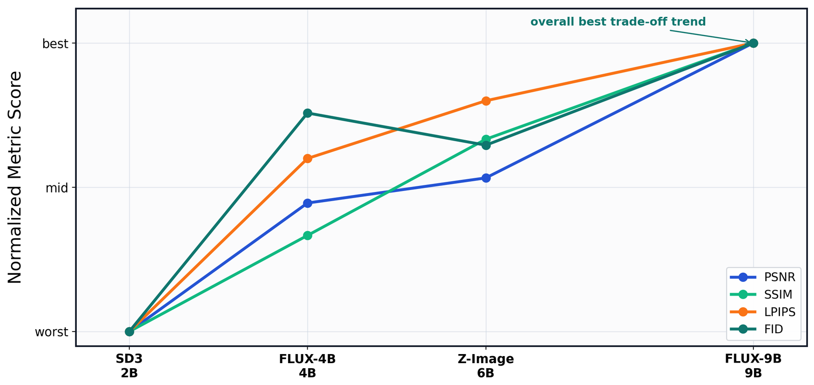
Few-step sampling
Separately trained 4-, 2- and 1-step FLUX.2-4B models on DRealSR. More steps improve fidelity, while even the 1-step model remains competitive thanks to the RRF acceleration point.
| NFE | PSNR ↑ | SSIM ↑ | LPIPS ↓ | FID ↓ |
|---|---|---|---|---|
| 4-step | 29.77 | 0.82 | 0.25 | 118.18 |
| 2-step | 29.03 | 0.79 | 0.27 | 115.43 |
| 1-step | 28.93 | 0.78 | 0.28 | 117.56 |
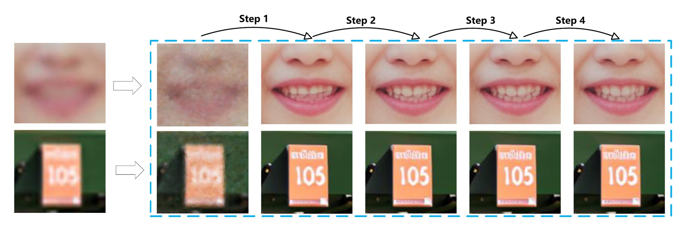
Visual Comparison
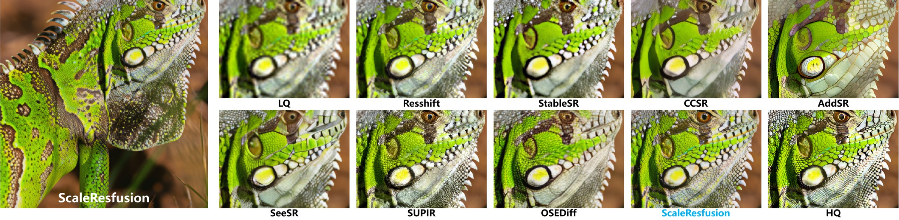
DRealSR
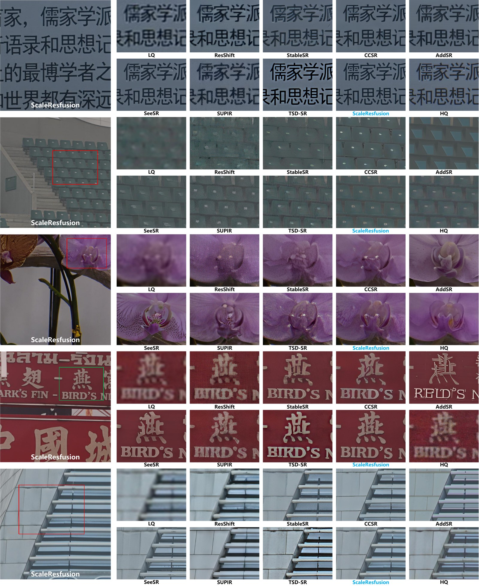
RealSR
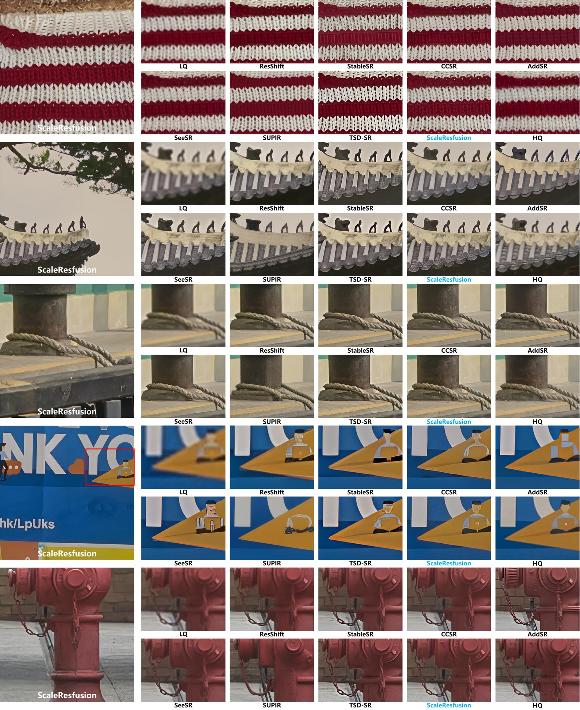
DIV2K-Val
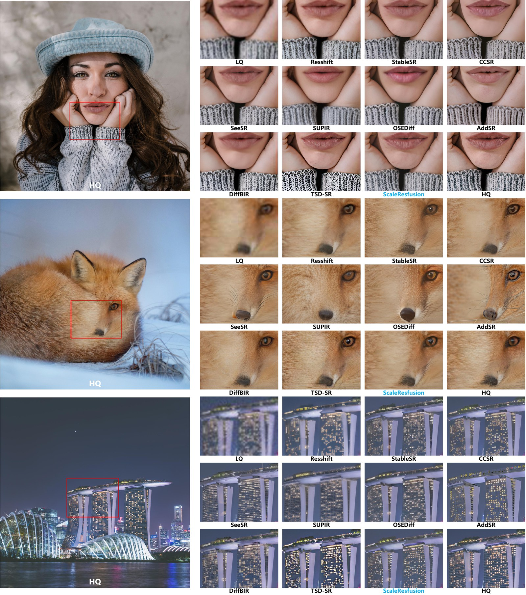
LSDIR-Val
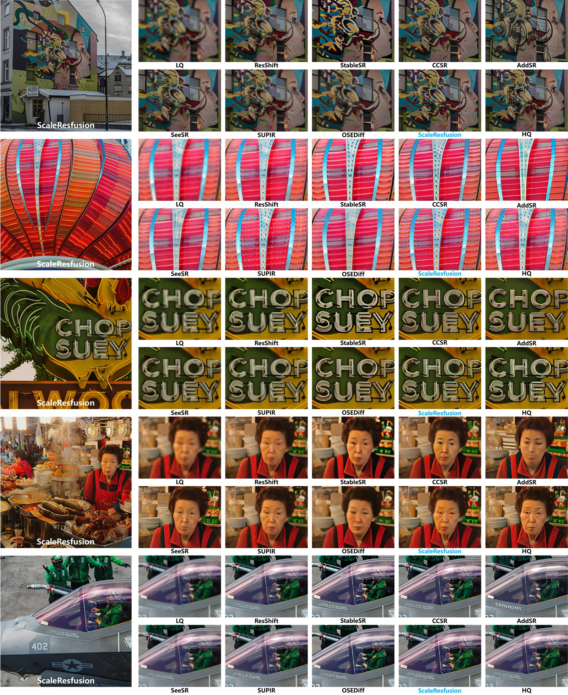
WebPhoto-Test (in-the-wild face restoration, zero-shot)
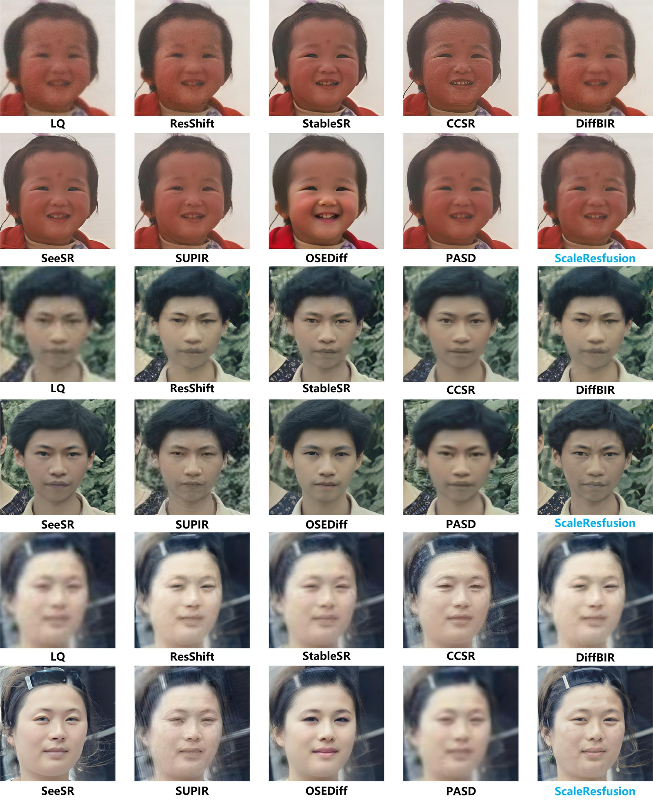
User Study
Pairwise model arena: in each round a participant sees an LQ input with the anonymised results of two models and picks the preferred one (or tie / both bad). 48 evaluators contributed 1,756 pairwise comparisons over benchmark images and in-the-wild photos.
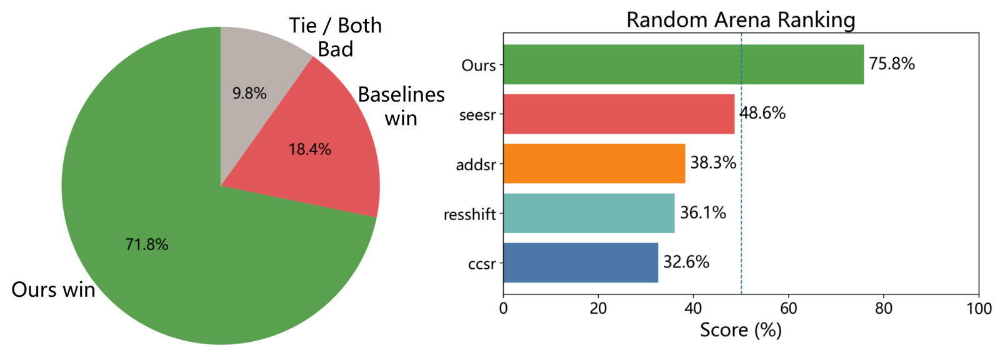
Video
A short video introduction of ScaleResfusion is available online.
Watch the videoBibTeX
@article{shi2026scaleresfusion,
title = {ScaleResfusion: Residual Rectified Flow based on Residual Vector Field},
author = {Shi, Zhenning and Xu, Chen and Zhang, Junhao and Zhang, Kefei and Liu, Linjie and Zheng, Zhedong and Li, Tao},
journal = {arXiv preprint arXiv:2607.25275},
year = {2026}
}